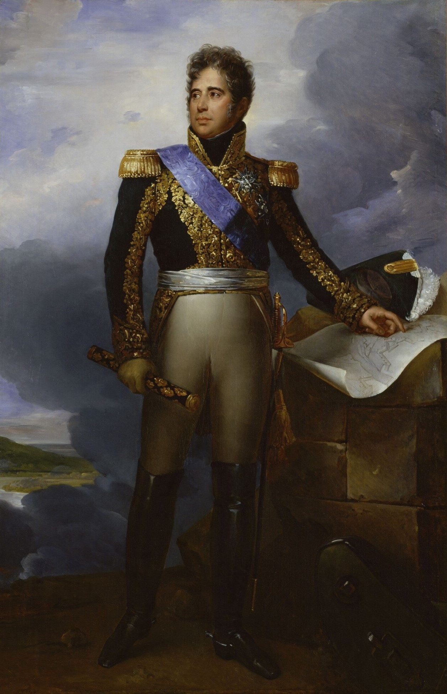
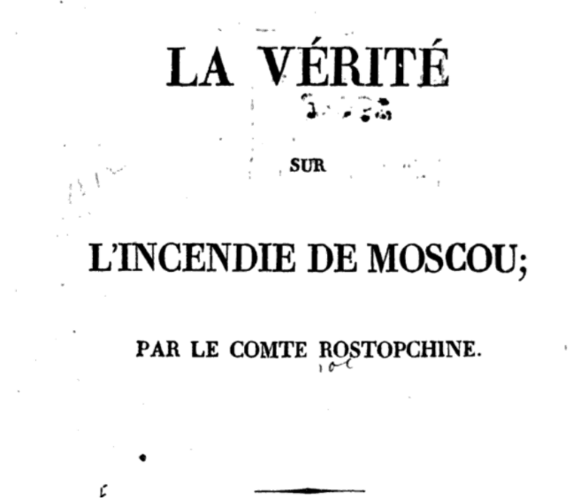

복덕방의 호구 - 조급한 나폴레옹
게시: 2021-01-11T06:30:27+09:00
이제 무엇을 할 것인지 고민하던 나폴레옹에게 가장 좋은 해결책은 알렉산드르와 평화 조약을 맺고 파리로 돌아가는 것이었습니다. 애초에 그러려고 모스크바까지 점령한 것인데, 러시아인들이 모스크바에 불까지 지르고 도망친 것을 보면 도저히 평화 조약을 맺으려 할 것 같지는 않았지만, 그래도 혹시 모르니 흥정은 해봐야 했습니다. 문제는 이쪽이 흥정을 할 준비가 되어있다는 것을 저쪽에 알려야 거래가 이루어질텐데, 그걸 저쪽에 알릴 방법이 없다는 것이었습니다. 그래서 나폴레옹이 부른 사람이 투톨민(Ivan Akinfevich Tutolmin)이라는 이름의 고아원장이었습니다. 투톨민은 원래 러시아군에서 장군까지 지내다가 퇴역한 노인이었는데, 모스크바 시내의 대형 고아원 원장직을 맡고 있었고, 원아들을 내버릴 수가 없어 피난을 떠나지 않은 강직한 사람이었습니다. 이 사람이 모스크바에 남아있는 러시아인들 중에서 가장 높은 지위를 가진 사람이었으므로, 나폴레옹은 투톨민을 사절로 삼아 알렉산드르와 소통의 길을 터보려 했습니다. 나폴레옹은 투톨민에게 그가 아끼는 고아원을 위한 운영자금을 두둑히 지급하고는 고아원의 후원자로 지정되어 있던 황태후, 즉 알렉산드르의 어머니에게 프랑스군이 협상을 원한다는 뜻을 담을 편지를 써서 인편에 전달하게 했습니다. 그러나 이런 간접적인 의사 전달이 얼마나 통할런지 불확실했으므로, 조바심이 났던 나폴레옹은 직접 자신이 편지를 쓰기로 했습니다. 이 편지에서 그는 모스크바가 불탄 것은 절대 그의 뜻이 아니라 로스톱친의 야만적인 파괴행위 때문이며, 로스톱친이 알렉산드르와 사전협의 하에 이런 짓을 자행했다고는 믿지 않는다고 적었습니다. 아울러, 그는 절대 알렉산드르에게 적의를 품고 있지 않다는 뜻을 밝혔습니다. 그리고 모스크바 시내에 남은 다른 귀족 중 그나마 괜찮은 편에 속했던 야코플레프(Ivan Alekseevich Yakovlev)라는 사람과 그의 가족에게 통행증을 내주며 그 편지를 들고 가게 했습니다. 나폴레옹은 증거가 남는 편지에는 이렇게 하나마나한 뜨듯미지근한 내용 밖에 적을 수 없었지만, 이 편지를 들고갈 메신저에게는 자신이 원하는 바를 명확히 밝혀야 했습니다. 9월 20일 야코플레프를 크레믈린으로 소환한 나폴레옹은 이 위대한 인물을 실제로 만나게 되어 어안이 벙벙해진 야코플레프에게 협박부터 감언이설에 걸친 넓은 스펙트럼의 장광설을 늘어놓았습니다. 그 내용을 요약하면 알렉산드르는 절대 자신의 적이 아니며, 자신의 진짜 적은 영국 뿐이라는 것, 그리고 자신은 절대 여기 모스크바에 머물고 싶지 않으며 하루 빨리 알렉산드르와 친구 먹은 뒤에 파리로 돌아가기를 희망한다는 것이었습니다. 그러나 나폴레옹의 조바심은 이렇게 두 통의 편지를 보내는 것만으로는 달래지지 않았습니다. 그는 루킨(Rukhin)이라는 이름의 모스크바 하급 공무원에게 평화 협정을 제안하는 내용의 편지를 들려 또 보냈습니다. 그러나 이 공무원은 러시아군 지역에 넘어가자마자 프랑스의 첩자로 의심받고 체포되어 혹독한 고문을 당했고, 나폴레옹의 애절한 편지는 2주 뒤에나 러시아 수뇌부에 전달되었습니다. 상트 페체르부르그와 모스크바 사이가 700km 정도 된다는 것을 생각하면 말을 타고 달려도 왕복에 대략 2주는 걸릴 것입니다. 그런데 이렇게 연달아 3통의 편지를 보내고도 회신이 오지 않자, 아직 10일 정도 흘렀을 뿐인데도 조바심이 난 나폴레옹은 직접 공식 사절을 보내기로 했습니다. 야코플레프가 떠난지 10일 정도 밖에 되지 않았던 10월 3일, 나폴레옹은 상트 페체르부르그 주재 대사를 지냈던 그의 마복시 콜랭쿠르에게 그 역할을 맡아 달라고 부탁했습니다. 그러나 콜랭쿠르는 '짜르가 자기를 만나주지 않을 것'이라며 거절했으므로, 나폴레옹은 로리스통(Jacques Alexandre Bernard Law, marquis de Lauriston) 장군에게 그 임무를 맡겼습니다.

(바그람 전투에서 사상 최대 규모의 대포병대를 지휘했던 로리스통 장군입니다. 이 분의 본명은 Jacques Alexandre Bernard Law로서, 로리스통이라는 이름은 뒤에 붙여진 marquis de Lauriston, 즉 로리스통 후작이라는 작위명에서 비롯된 것입니다. 프랑스인의 성씨가 로 Law 라니 좀 이상하지 않습니까 ? 이 분도 막도날처럼 스코틀랜드 집안 출신이었습니다. 스코틀랜드 출신으로 프랑스에 자리를 잡은 Law라는 성씨라... 어디서 들은 기억 안 나십니까 ? 예, 맞습니다. 프랑스 중앙은행의 전신이라고도 할 수 있는 Banque Générale를 세우고 종이 돈을 대량으로 찍어냈다가 결국 미시시피 주식회사 거품을 일으켜 프랑스 재정을 파탄으로 몰아 넣은 바 있는 존 로 John Law 바로 그 사람의 조카입니다. 로리스통은 프랑스령 인도 퐁디셰리에서 태어났습니다. 당시 아버지가 거기 총독이었거든요.) 나폴레옹의 심정을 가장 잘 보여주는 장면은 10월 5일, 준비를 마친 로리스통이 출발할 때였습니다. 떠나기 전 나폴레옹에게 마지막 인사를 하러 온 로리스통에게 나폴레옹은 다음과 같이 말했습니다. "난 평화를 원해. 내게 필요한 건 평화야. 난 절대적으로 평화를 원한다고. 단지 체면만 구기지 말게." (Je veux la paix, il me faut la paix, je la veux absolument; sauvez seulement l'honneur!)

(나폴레옹이 했다는 Je veux la paix, il me faut la paix... 라는 말의 출처는 방화범 로스톱친이 쓴 '모스크바 화재의 진실(La vérité sur l'incendie de Moscou)'이라는 책에 나오는 것입니다. 따라서 신빙성이 높다고 말할 수는 없겠습니다.) 그런데 나폴레옹이 전쟁에 바빠서 부동산을 사고 파는 것을 많이 해보지는 못했던 모양입니다. 규격화된 물건이 같은 장소에 잔뜩 있는 아파트 같은 경우는 이야기가 다릅니다만, 단독주택이나 상업용 빌딩 같은 경우는 절대 먼저 팔겠다고 내놓아서는 안됩니다. 원래 부동산이라는 것은 누가 그 장소의 그 물건이 필요해서 사겠다고 나서면 금값이지만, 주인이 돈이 필요해서 먼저 팔겠다고 내놓으면 X값이 되거든요. 교전국 간의 평화 교섭도 마찬가지입니다. 평화가 아쉬운 쪽이 먼저 협상을 청하기 마련인데, 보통은 침공을 당해서 국토가 쑥대밭이 되고 있는 쪽이 급하기 마련입니다. 그런데 적의 심장부를 차지하고 있는 나폴레옹 쪽에서 이렇게 평화를 애걸복걸하는 모습을 보인 것은 매우 뜻밖이었습니다. 나폴레옹이 편지를 재차 삼차 보낼 때마다 알렉산드르와가 평화 협정에 응하지 않을 가능성이 점점 커질 뿐이었습니다. 이에 대해서는 콜랭쿠르도 그의 회고록에서 이에 대해 지적하며, 나폴레옹의 그토록 뛰어났던 판단력이 결정적인 순간에 이렇게 흔들린 것에 대해 통탄했습니다. 당시 나폴레옹이 극심한 궁지에 몰렸기 때문에 이렇게 악수를 둔 것일까요? 아니었습니다. 정반대로, 근거없는 자신감 때문이었습니다. Source : 1812 Napoleon's Fatal March on Moscow by Adam Zamoyski La vérité sur l'incendie de Moscou By Fëdor Vasilʹevič Rostopčin